O problema
O fluxo não apresenta dificuldade de acompanhamento dos fiscais de contrato devido as atividades que cada fiscal exerce durante as rotinas diarias, muitas vezes esquecendo dos deveres de fiscalização de contrato, necessitando de ferramento de aviso aos fiscais e gestores.
O fiscal recebe um e-mail inicial, e depois fica responsável pela fiscalização dos itens, o fiscal não requisita o item e o contrato pode vencer sem execução no periodo vigente do contrato; confirmar contrato Vigente e permissão de prorrogação; avaliar vantajosidade e enquadramento legal; instruir e anexar documentos; registrar termo aditivo; registrar reajuste/repactuação/reequilíbrio, se houver; após publicação, atualizar a vigência do contrato e manter o status Vigente; recalcular alertas e registrar em auditoria.
todo o valor gasto na instrução processual, empenho do contrato, e horas trabalhadas do servidor, nao se concretiza com a chegada dos materia
AS-IS · o processo antes do MVP
O caminho real, com quem faz, o que entra, onde espera e o que é automatizável. Fonte: tabela AS-IS do projeto.

Fluxograma AS-IS · amarelo: etapa manual; tracejado: ponto de espera. Os números correspondem à tabela. Fonte Mermaid.
| Etapa | Quem faz | Entra | Ação | Sai | Sistema | Regra | Onde espera | Tempo | Automatizável |
|---|---|---|---|---|---|---|---|---|---|
| Monitoramento e gatilho | Administrador, Diretor, Coordenador ou Gerente; escrita pelo autor e chefias | Contrato vigente e datas de vigência | Consultar Próximos do vencimento ou filtrar semáforo | Contrato identificado para avaliação | Hórus — painel de Contratos | Até 90 dias; confirmar Vigente e permite_prorrogacao | Não informado no fluxo anexado. | Não informado no fluxo anexado. | |
| Decisão e instrução | Administrador, Diretor, Coordenador ou Gerente; escrita pelo autor e chefias | Contrato elegível e condições/preços de mercado | Avaliar vantajosidade e enquadramento legal; reunir e anexar documentos | Documentação anexada ao contrato | Hórus — Documentos, repositório privado | Decidir pela prorrogação ou avaliar nova contratação | Não informado no fluxo anexado. | Não informado no fluxo anexado. | |
| Registro do termo aditivo | Administrador, Diretor, Coordenador ou Gerente; escrita pelo autor e chefias | Documentação e dados da prorrogação | Registrar tipo, assinatura, nova vigência, fundamento, número, descrição e status | Aditivo registrado e tramitado até publicação | Hórus — Termos aditivos / apostilamentos | Rascunho → Em tramitação → Assinado → Publicado; ou Cancelado | Não informado no fluxo anexado. | Não informado no fluxo anexado. | |
| Alteração financeira, quando aplicável | Administrador, Diretor, Coordenador ou Gerente; escrita pelo autor e chefias | Índice, percentual, data, valores e memória de cálculo | Registrar reajuste, repactuação, reequilíbrio, revisão ou atualização monetária | Alteração financeira registrada | Hórus — Reajustes / repactuações / reequilíbrio | Solicitado → Em análise → Aprovado → Aplicado; ou Indeferido | Não informado no fluxo anexado. | Não informado no fluxo anexado. | |
| Atualização da vigência | Administrador, Diretor, Coordenador ou Gerente; escrita pelo autor e chefias | Aditivo publicado com nova data de término | Editar data de término ou meses de vigência | Contrato com nova vigência e status Vigente | Hórus — edição do contrato | Registro do aditivo e edição da vigência são etapas distintas | Após publicação do aditivo; espera não medida | Não informado no fluxo anexado. | |
| Efeitos e encerramento do fluxo | Sistema Hórus | Nova vigência e registros de alterações | Recalcular semáforo e registrar criação do aditivo e mudanças em auditoria | Alertas recalculados; documentos disponíveis; trilha de auditoria | Hórus — semáforo, alertas e auditoria | Auditoria append-only; faixa recalculada diariamente | Não informado no fluxo anexado. | Não informado no fluxo anexado. | Sim, com regra clara |
TO-BE · o processo com o MVP
O que muda em cada etapa, quem passa a fazer e o ganho esperado. Fonte: tabela TO-BE do projeto.
Fluxograma TO-BE · verde: máquina (automação local); azul: pessoa (fé pública). Fonte Mermaid.
O documento descreve o funcionamento atual do Hórus; não apresenta processo futuro distinto.
A tabela TO-BE não veio no projeto.
O que o MVP entrega
Tela-assinatura: Régua de vencimentos de 0 a 180 dias e semáforo em barra.
Menu do MVP: PainelContratosNovo contratoInstruçãoConfiguração
Regras de negócio
| ID | Regra | Quando | Tipo | Exceção |
|---|---|---|---|---|
R1 | Renovação aplicável apenas a contratos com vigência ativa; confirmar permite_prorrogacao | Avaliação da renovação | Negócio | Sem permissão: avaliar nova contratação |
R2 | data_fim calculada por data_inicio + vigencia_meses; admite ajuste manual | Cadastro e atualização de vigência | Cálculo | Ajuste manual previsto |
R3 | Semáforo: >120 normal; 91–120 acompanhamento; 61–90 atenção; 31–60 providências; 0–30 urgente; vencido ação imediata | Monitoramento diário | Cálculo | Encerrado, Rescindido e Expirado saem da contagem regressiva |
R4 | Após publicação do aditivo, editar a vigência e manter Vigente | Prorrogação formalizada | Negócio | Aditivo e atualização do contrato são etapas distintas |
R5 | Escrita permitida ao autor e às chefias; gestão para Administrador, Diretor, Coordenador e Gerente | Gestão e alteração de registros | Acesso | Não informado no fluxo anexado. |
R6 | Auditoria append-only da criação do aditivo e mudanças de situação/vigência | Registro e alteração contratual | Negócio | Não informado no fluxo anexado. |
Papéis
| Papel | Quem é | O que vê | O que faz | O que não faz | Registro |
|---|---|---|---|---|---|
| Perfis de gestão | Administrador, Diretor, Coordenador e Gerente | Módulo de gestão de contratos; recorte por perfil não detalhado | Gestão de contratos, incluindo renovação | Restrições específicas por perfil não detalhadas | Criação de aditivos e mudanças de situação/vigência em auditoria |
| Autor do registro | Usuário autor do registro | Visibilidade não detalhada no fluxo | Escrita permitida no próprio registro | Escrita em registros de terceiros não é autorizada por essa regra | Trilha de auditoria do módulo |
| Responsáveis pela fiscalização | Gestor, fiscais titular/substituto, técnico/administrativo e preposto da contratada | Documentos anexados para consulta e fiscalização; visibilidade por papel não detalhada | Fiscalização pelos responsáveis designados | Permissão de escrita não é concedida apenas pela designação de fiscal no texto | Histórico de substituições |
Métricas do piloto
Como testar
O MVP é um `index.html` offline, com dados fictícios. Abra index.html.
cd Apps/renovacao-contratos-horus python construir.py python testes/testar.py python testes/cenarios.py python testes/jornada.py # Lightpanda (via WSL, CDP em 9222 e HTTP em 8000) python testes/jornada.py --cdp http://127.0.0.1:9222 --base http://127.0.0.1:8000
Documentos: PROJETO.md · sprint.md · README.md